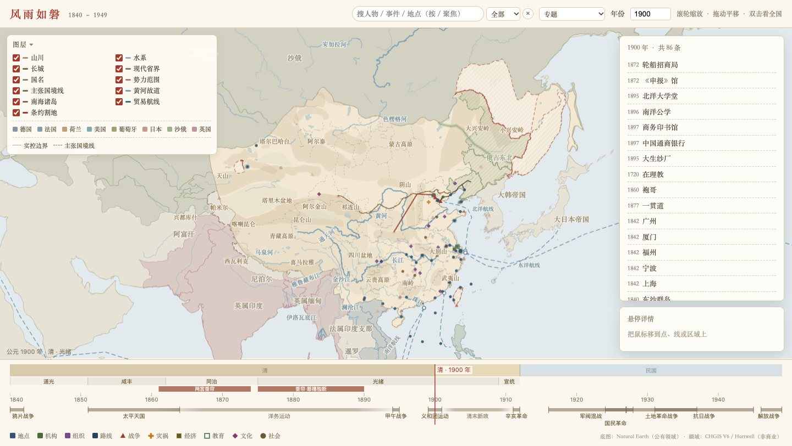
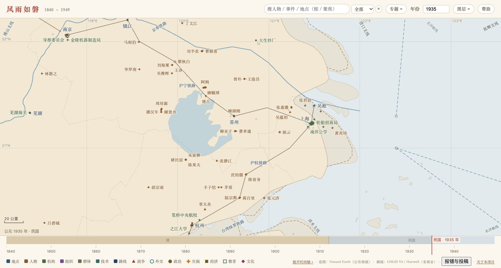
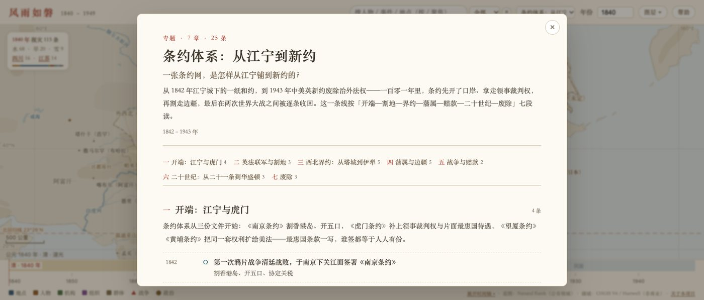
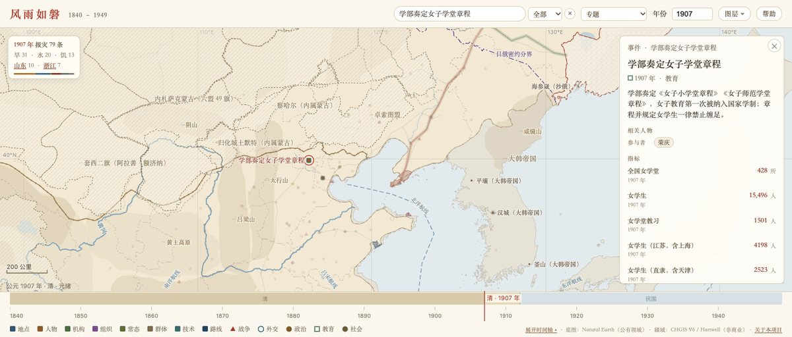

不是一部通史，是一层底图
任选一个年份、一个地方、一件事，都能单独打开。年份滑动时，图上的东西随之增减——它更像一张案头图，而不是一本从头读到尾的书。
已开放 · 1840 – 1949
疆域按年切换，人物、机构、灾荒、报刊、铁路各归其位，每条都带着出处。 它不替你讲故事，只是把材料摆好。
进入地图 → 正在持续迭代

一句话：把那个年代的基础信息整理好，放在同一张可以按年翻的地图上。
任选一个年份、一个地方、一件事，都能单独打开。年份滑动时，图上的东西随之增减——它更像一张案头图，而不是一本从头读到尾的书。
条约、割地、赔款当然都在。但同一年还有学堂、纱厂、电影、女学、铁路与电报。把这些并排放在一起，才更接近那个年代真实的密度。
我们只做基础信息的整合、校对与标注：每条带出处，边界标明「主张」与「实控」。挖掘、比较与阐述，是读史人自己的事。
灵台无计逃神矢，风雨如磐暗故园。
寄意寒星荃不察，我以我血荐轩辕。
鲁迅《自题小像》，1903 年
从疆域，到专题，到一个数字，再到一个人。
疆域
1840 年的基线分三档：直辖、藩部、主张未实控，画法各不相同。条约割让面按签订年份出现；势力范围、租借地、军事占领分层叠加；1934 年《申报》地图配准后，东段海岸与东北换成了当年的线。

专题
48 条专题线、245 章、1,384 条。每章一句编者串词，把这一章的人和事串起来；条目点开是详情，返回还在原处。鸦片战争、甲午、庚子、辛亥、庚款、太平天国、新政都已经是能读的章节。

数字
1907 年学部统计：全国 428 所女学堂、15,496 名学生、1,501 名教习，按省分解；纱厂女工、丝厂罢工、路灯、人力车、自来水，也各自有指标序列与来源。能给到书页的给书页，给不出页码的就只写书名。物价那一层另有配套站：百年账本，只回答「那年的一块钱能买什么」。

1840–1911 共 10,267 条县级报灾记录：水、旱、蝗、疫、震。按省统计，点县看它七十年。
全库全文检索，结果标出命中字段与片段；点一条，地图跳到那一年、对准那个地方。
1,285 位人物、450 条关系边：师承、上下级、同事、亲属、同盟、对手，每条写清依据。
没有爬虫拼盘，也没有一项是「大概」。三条规矩。
每个条目至少一种出处；条约与章程细到书页，电子书标章节，给不出页码的就只写书名。
1864 年西北界、1881 年伊犁、唐努乌梁海、帕米尔、滇缅——一段一段拿条约、旧图与 1934 年《申报》地图比，差在 0.2–0.3° 的会写明「据某图某页配准」。
查不到的不写，读不出的不猜。有争议的地方把「主张」与「实控」分开画，让人自己看。
一个做了几年、推翻过一次的项目。
友人米沙看了，建议并鼓励我把近代史单独做成一条线——那是这个项目的起点。
真做起来才发现，近代史要的东西不一样：时间要精确到日，空间要精确到条约里的界点，每句话都要能回到出处。原来的架构撑不住，于是推倒，按新的数据模型整个重建。
前期大量时间花在清代疆域的变更细节上：割让带、卡伦线、界约的子约、唐努与帕米尔这些没人画的地方。
清末那几条主线（新政、辛亥、庚子、甲午、庚款、垂帘、太平天国、鸦片战争）已经做成能读的专题；眼下在补两处：1870–80 年代最薄的十年，和 1920–40 年代的经济数字——物价指数、生活费分项、工业产量，让「那年多少钱」也有据可查。
这不是完成品，是一个还在长的资料底图。
1840 基线三档、1864 与 1881 割让面、唐努乌梁海、帕米尔、1934 年图校准，基本收口。
专题、人物、机构、灾荒、报刊正在铺开；读页、关系、指标一层层往上加。
已经在成线：物价与金融、战争、卫生、教育各有专题；地方与日常仍缺。
欢迎指错、补料、提用法：页面里有「报错与投稿」，也可以写邮件给我。地图与检索已经开放——顶栏「进入地图」就是它。
底图与几何来自公开数据：Natural Earth（公有领域）、CHGIS V6 与 Hartwell（学术、非商业使用）、CShapes（非商业）、OpenStreetMap 断续线（ODbL）、思源宋体与 Noto（OFL）。逐项条款与署名见仓库的 NOTICE。
历史疆界按条约、旧图与当时图集整理，属于重建与示意，不是测绘成果。有争议或资料互相冲突的地方，把「主张」与「实控」分开画，并标注精度与来源。
不收教材原文（只记知识点），不收录未授权的地图扫描件，也不做人物评价。